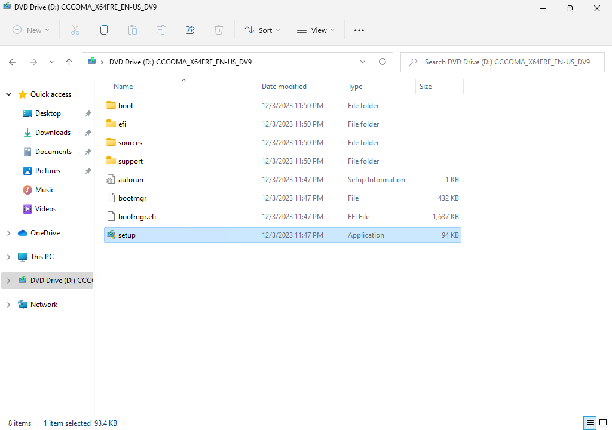
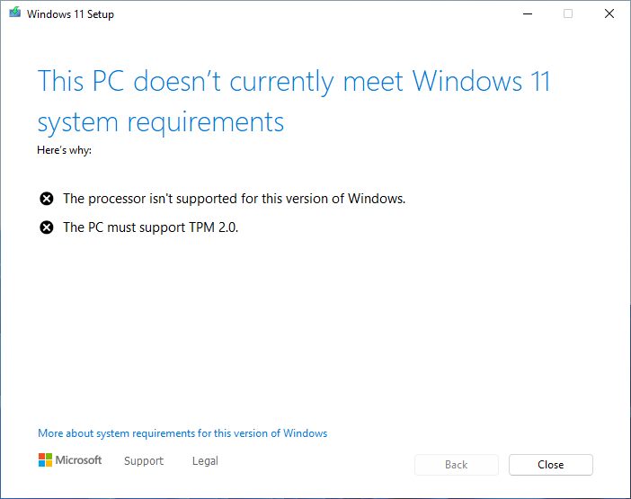
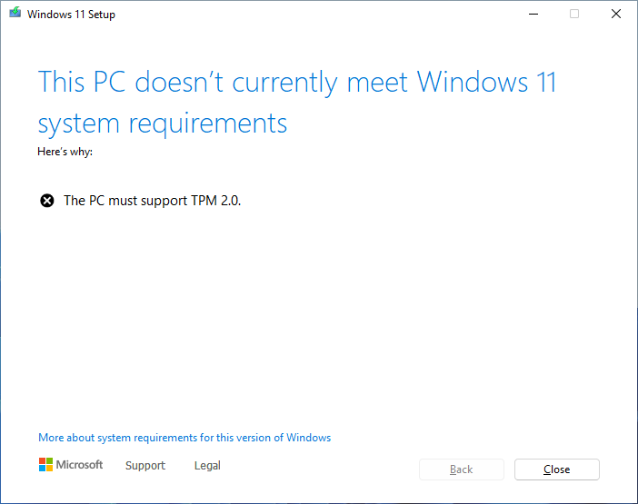

Introduction
忘備録。
開発メモ その261 Windows 11 を古いマシンにインストールする にてインストールした Windows 11 マシンに対して、いつまでたっても 23H2 のアップデートが降ってこない。
CPU とかのハードウェア要件をバイパスした影響だということに気づき、アップデートする方法を探したのが事の発端。
とはいえ、いきなり物理マシンで使うのは怖いので、Hyper-V 環境を用意してそちらで検証。
{kind=link}
How to do?
実は、Windows 10 から 11 へのアップグレードに関して、Windows 11 をインストールする方法 というページで CPU 等の条件チェックを回避する方法を Microsoft が公式として説明している。
ページ自体は Windows 10 から 11 へのアップグレードだが、21H2 から 23H2 のようなアップデートにも対応できる。
ただし、
TPM 2.0 (少なくとも TPM 1.2 が必要) のチェック、CPU ファミリ、CPU モデルをバイパスできます。
とあるように、TPM 自体は 1.2 が最低でも必要で、このチェックだけは回避できない。
TPM 自体のチェックを回避する方法は後述。
1. 普通にアップデートを実行
まずは何も対処しないでアップデートを実施。

Windows 11 の iso を挿入し、 setup.exe を実行。
{kind=link}
{kind=link}
{kind=link}
{kind=link}

ここで、条件チェックに引っかかる。
{kind=link}
2. ハードウェア要件回避を実行
先の Micorsoft の公式手順に従い、レジストリを変更する。
1 | $ reg add HKEY_LOCAL_MACHINE\SYSTEM\Setup\MoSetup /v AllowUpgradesWithUnsupportedTPMOrCPU /t REG_DWORD /d 1 /f |
再度、setup.exe から再開する。

が、TPM だけは回避できない。
{kind=link}
これも公式手順通りで、当該のマシンには TPM 自体が組み込まれていないため、TPM 1.2 以上という条件を満たすことができず、チェックを回避できない。
3. TPM のチェックを回避
によれば、TPM のチェックどころか、ハードウェア要件のチェック全体を回避できるバッチスクリプトが存在するとのこと。
それが
である。
このバッチを管理者で実行し、再度 setup.exe を実行すればいい。
1 | $ Skip_TPM_Check_on_Dynamic_Update.cmd |
一応、このバッチ Skip_TPM_Check_on_Dynamic_Update.cmd の中身を張っておく。
1 | @(set '(=)||' <# lean and mean cmd / powershell hybrid #> @' |
インストール再開後、ハードウェア要件のチェックを回避し、次の画面に進むことができるはず。
{kind=link}
{kind=link}
{kind=link}
{kind=link}
{kind=link}
{kind=link}
長い更新を終えて無事に 23H2 に